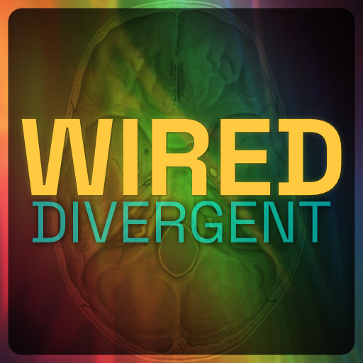

Wired Divergent Podcast
Nervous system regulation for neurodivergent brains. Launching May 2026.
About the show
Coming in April 2026 to podcast platforms and YouTube! Wired Divergent is a solo show about nervous system regulation for neurodivergent brains. Hosted by Jen deHaan, an autistic and ADHD Canadian who has spent close to 30 years working across creative technology, performance, fitness instruction, and podcast production.
Most nervous system content assumes a neurotypical baseline. This show doesn’t.
Wired Divergent covers functional freeze, autistic burnout, sensory overload, ADHD paralysis, masking, interoception, and the somatic tools that actually work when your brain is wired differently. Episodes mix long form education with short, repeatable micro-rest and body double sessions you can use in real time.
The show is grounded in the Community Resilience Model (CRM), a skills-based, trauma-informed approach that treats regulation as something your body already knows how to do. Polyvagal theory gets discussed here too, but critically (basically, not as gospel but we’ll take the pieces that work).
If you’re a late-diagnosed or self-identified neurodivergent adult, an ADHD professional trying to get through your workday without crashing, a practitioner looking to make your somatic work more neuro-inclusive, or just someone who has given up on “just breathe” as advice, this show is for you.
New episodes cover topics like: somatic exercises for ADHD, vagus nerve stimulation for sensory processing, the window of tolerance for neurodivergent adults, co-regulation techniques, stimming as a regulation tool, and why standard meditation fails neurodivergent brains.

Listen
Watch
Subscribe
Who made this podcast
Host: Jen deHaan
Jen is an autistic and ADHD performer. Her background is a unique collection of things: close to 30 years teaching creative technology and instructional design, improv and acting coaching, fitness instruction, a BFA, and a bunch of certifications. Jen is certified in polyvagal informed approaches, the Community Resilience Model, and completed graduate studies in Developing Healthy Communities from Tufts University. She’s building education and community around nervous system regulation that actually accounts for neurodivergent experience. Learn more at jendehaan.com/about.
Show Art
Created by Jen deHaan. Show art contains the image of the cranial base where the brain rests, supporting structures for lobes, and the foramen magnum that allows passage for vertebral arteries and nerves (and is where the vagus nerve originates).
Production
Created, produced, directed, edited, and marketing by Jen deHaan. Stock music and SFX licensed to Jen.